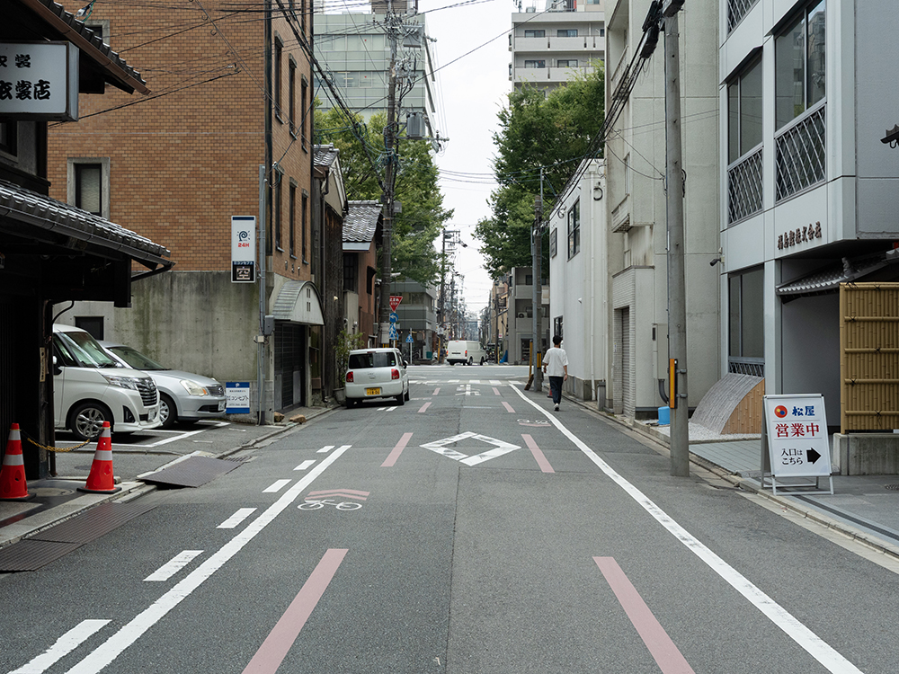

堺町通よりお越しのかた
from Sakaimachi st.

1. 押小路堺町を南に進むと左手にコインパーキングがあります。
2. コインパーキングが右手になるように、小道を進みます。
3. 突き当たりを右に曲がると到着です。右手に見える建物がOGYです。
←
→
御池通よりお越しのかた
from Oike st.
1. お寺とスポーツ量販店の間の小道に入ります。
2. 到着です。左手の建物がOGYです。
←
→
* 市営地下鉄でお越しの場合は、烏丸御池駅（1番出口）から徒歩5分です。
if coming by subway, it's a 5-minute walk from Karasuma Oike Station (Exit 1).
* タクシーには、「堺町御池北側（さかいまち・おいけ・きたがわ）」と伝えます。
you can ask your taxi driver "Sakaimachi Oike Kitagawa" to get OGY.
何かありましたら、本URLを送った本人まで、お問い合わせください。
for any inquiries, please reach out to the sender of this URL.